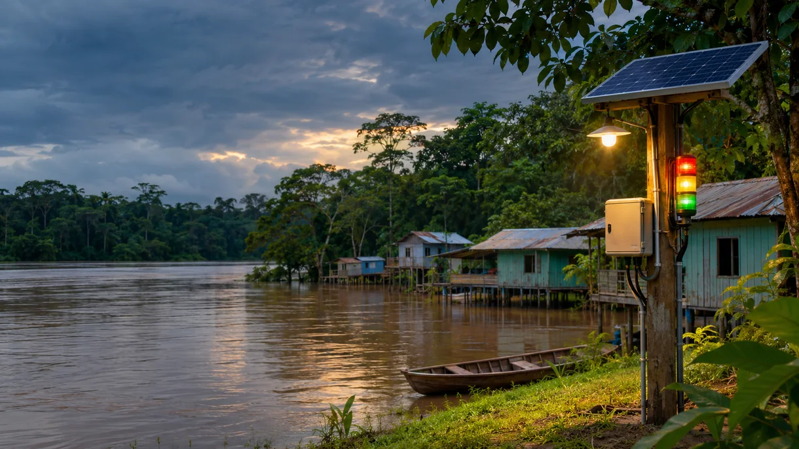
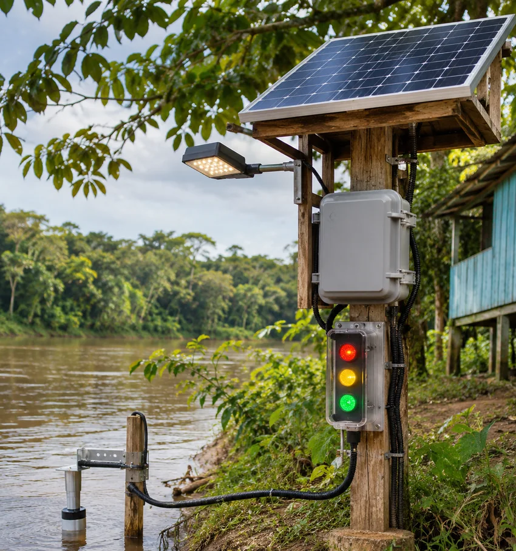
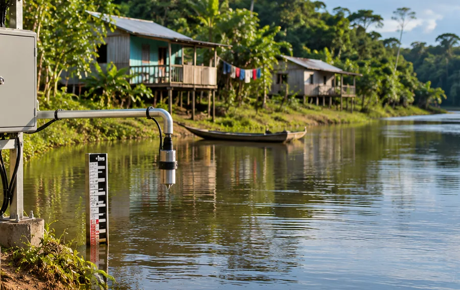
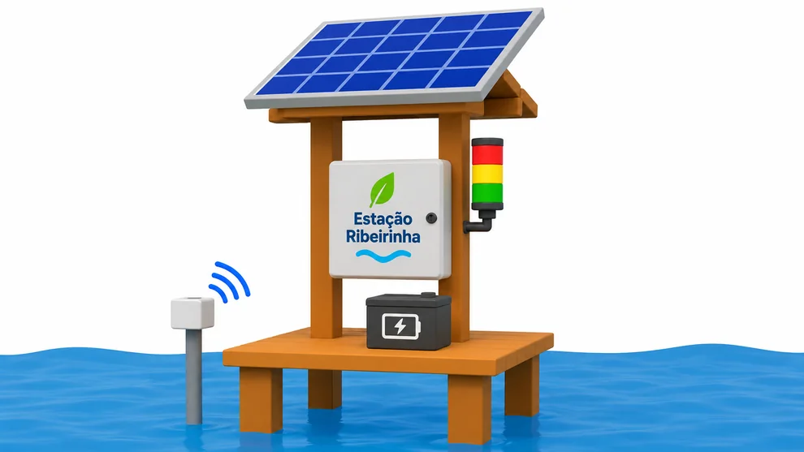

pessoas atingidas por cheias
Amazonas, balanço federal de julho de 2025.
Ver fonte ↗Energia, informação e segurança para comunidades que vivem do rio.
Uma estação de baixo consumo que acompanha o nível da água, mantém recursos essenciais e apoia a preparação comunitária, mesmo quando falta internet.
01 / A REALIDADE
Para famílias que dependem do rio, um período de cheia pode afetar o caminho até serviços, a comunicação e a rotina. Os números abaixo mostram dimensões do problema — cada qual com seu ano e território.
Amazonas, balanço federal de julho de 2025.
Ver fonte ↗Pesquisa de campo em comunidades de Coari (AM), 2015.
Ver pesquisa ↗Região Norte, sem rede nem fonte alternativa, 2024.
Ver IBGE ↗Amostra de 83 escolas amazonenses, levantamento de 2018.
Ver levantamento ↗Importante: pesquisas de diferentes anos e amostras não representam uma estimativa única para toda a população ribeirinha brasileira.

POR TRÁS DOS INDICADORES
Proteger documentos, separar medicamentos, verificar rotas e preservar um meio de comunicação são decisões que dependem de tempo, recursos e de orientações oficiais. É nesse intervalo que a Estação Ribeirinha busca oferecer apoio.
Veja como a proposta funcionaRisco sanitário nas cheias: a água de inundação pode entrar em contato com esgoto, fossas e resíduos, ampliando riscos à saúde. O acompanhamento das águas ajuda a comunidade a observar condições de risco e buscar orientações preventivas. Orientações do Ministério da Saúde ↗
02 / A SOLUÇÃO
A Estação Ribeirinha reúne energia solar, monitoramento do rio e sinalização comunitária. O software organiza as medições e apresenta as informações à central da Defesa Civil quando há comunicação.
Selecione um componente para entender sua função.

Capta energia durante o dia e contribui para recarregar a reserva elétrica da estação. A geração depende da luz disponível.


03 / COMO FUNCIONA
O morador não precisa ter smartphone ou conexão à internet para enxergar a sinalização local. A parte remota é uma capacidade adicional, condicionada à comunicação.
O painel transforma luz solar em eletricidade.
A bateria guarda energia para os momentos de pouca luz solar.
O sensor observa mudanças no nível local da água.
As leituras ficam guardadas, mesmo com conexão instável.
LEDs e som indicam condições previamente definidas.
Com conexão, as informações podem seguir para a central da Defesa Civil.
Preparação comunitária: as leituras locais ajudam a acompanhar a elevação das águas em conjunto com os comunicados da Defesa Civil.
04 / EXPERIMENTE
As demonstrações abaixo são funcionais e usam dados fictícios. Ajuste o rio, gere um alerta e acompanhe como ele aparece na central.
Um cenário educacional com consumo de 47 Wh por dia, considerando iluminação, monitoramento e uma recarga parcial de celular. Sem qualquer nova geração solar.
250 − (47 × 4) = 62 Wh úteis restantes. Cenário demonstrativo de quatro dias sem geração solar.
05 / SOFTWARE
O painel representa como a Defesa Civil poderia acompanhar leituras e alertas encaminhados por uma integração autorizada no futuro.
Ambiente demonstrativo. Nenhum órgão recebe mensagens reais.| Estação / comunidade | Leitura | Classificação | Notificação | Registro | Ação |
|---|
06 / IMPACTO SOCIAL
A energia e a informação ampliam possibilidades no cotidiano: estudar, trabalhar, circular com mais segurança e enfrentar as cheias.
À noite, luz e lanternas recarregáveis ajudam a orientar o caminho e buscar apoio em emergências.
Mais iluminação para estudar e energia para acessar materiais educativos offline.
Luz nos embarques e recarga de pequenos acessórios de navegação apoiam viagens de barco.
Energia de apoio e informação sobre o rio ajudam a planejar pesca e atividades locais.
Sinais da elevação do rio ajudam famílias a se organizar e acompanhar avisos importantes.
Energia essencial para a rotina: mais autonomia, conforto e acesso à informação.
FONTES & TRANSPARÊNCIA
Pesquisas públicas e estudos científicos ajudam a compreender as necessidades das comunidades. Os números interativos do painel ilustram o funcionamento do sistema.
ESTAÇÃO RIBEIRINHA
Explore o funcionamento da estação, teste o monitoramento e acompanhe a demonstração de uma central de alertas.